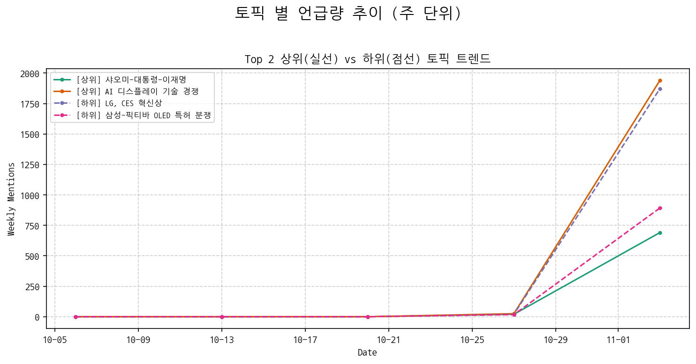
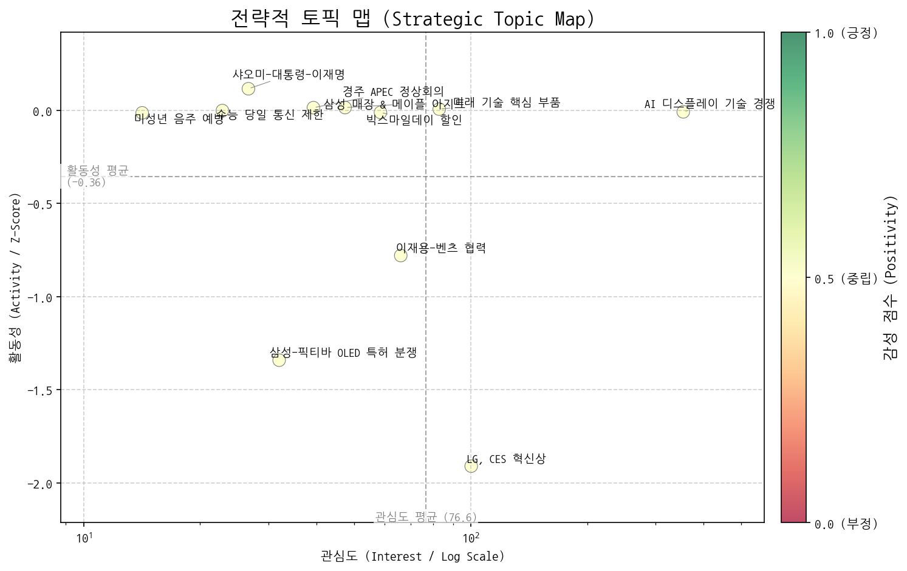
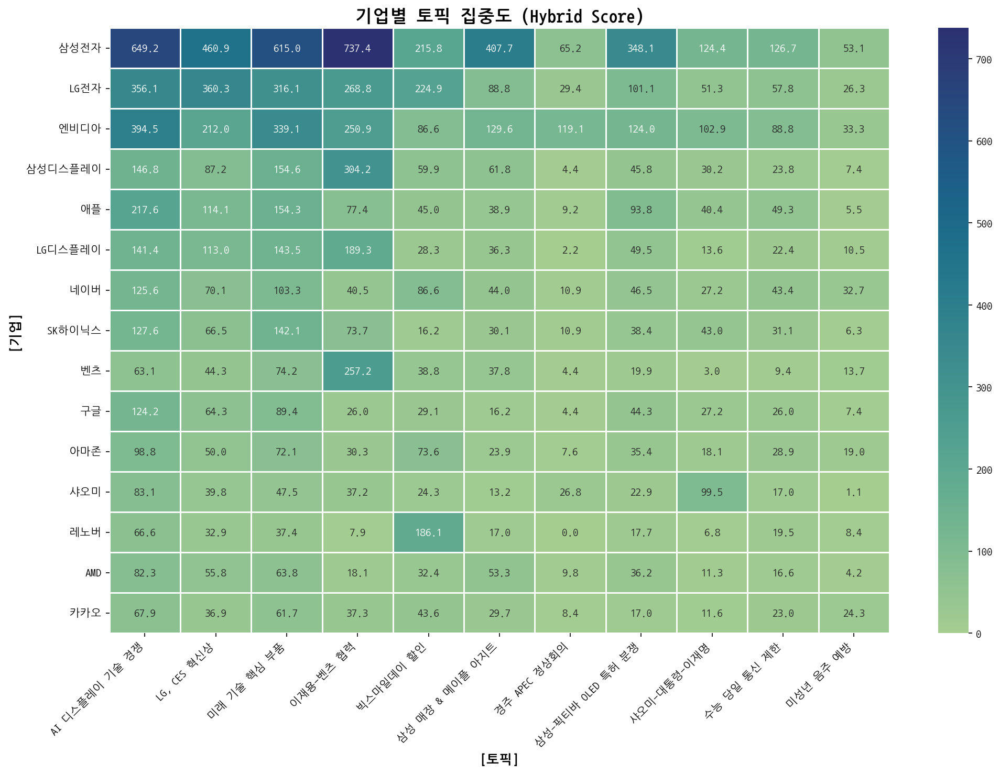
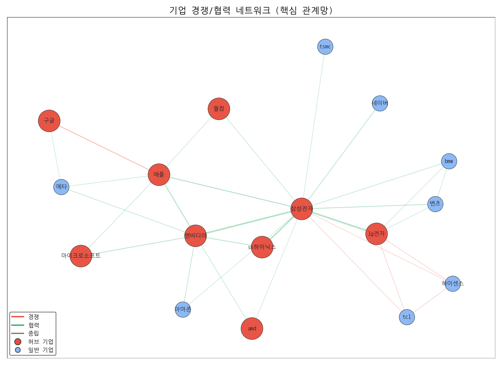
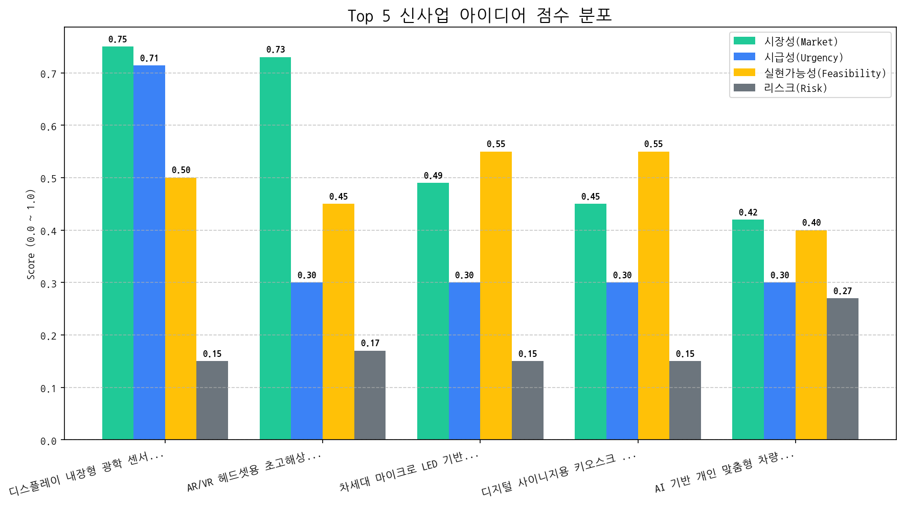

개요:
본 보고서는 2025년 10월 12일부터 2025년 11월 10일까지의 시장 데이터를 분석한 결과입니다. 지난 한 달간의 시장 동향을 파악하고, 당사의 기회 및 위협 요인을 분석하여 차기 분기의 최우선 전략 방향을 제시합니다.
핵심 변화:
기회 및 위협 요인:
기회:
위협:
최우선 전략 방향 (다음 분기):
결론:
디스플레이 내장형 광학 센서 기술은 당사의 미래 성장을 위한 핵심 동력이 될 수 있습니다. 지속적인 기술 개발 투자와 시장 변화에 대한 민감한 대응을 통해 시장 경쟁 우위를 확보하고, 차세대 디스플레이 시장을 선도할 수 있도록 최선을 다하겠습니다.
LG전자의 혁신 기술 수상과 삼성-벤츠 협력 가능성이 보이는 가운데, 국내 기업들은 AI 디스플레이 기술 개발을 통해 미래 시장 경쟁력 확보에 주력하고 있으며, 반도체, AI, 배터리 등 미래 기술 핵심 부품 경쟁력 확보가 중요해지고 있다.

| 토픽 | 요약 | 핵심 키워드 |
|---|---|---|
| AI 디스플레이 기술 경쟁 | 중국의 AI 기술 발전과 미국의 견제 속에서, 순천향대와 KCC 등 국내 기업이 새로운 디스플레이 기술 개발을 통해 2025년 시장 경쟁에서 우위를 확보하려 한다. | ai, 중국, 2025년 |
| LG, CES 혁신상 | LG전자가 CES에서 AI, OLED TV, 로봇 등 혁신적인 기술로 혁신상을 수상한 내용. | ai, 혁신상을, tv |
| 미래 기술 핵심 부품 | 반도체, AI, 배터리, 로봇 등 미래 기술 발전에 필수적인 핵심 소재, 부품, 장비, 기술 및 관련 기업 동향을 다룹니다. | 반도체, ai, 장비 |
| 이재용-벤츠 협력 | 이재용 삼성전자 회장과 벤츠 칼레니우스 회장의 만남을 통해 배터리, 차량용 반도체 등 미래차 협력 논의 가능성을 시사합니다. | 벤츠, 이재용, 삼성전자 |
| 빅스마일데이 할인 | 빅스마일데이를 맞아 인기 상품을 할인된 가격으로 쇼핑할 수 있는 기회와 혜택을 제공하는 행사 관련 뉴스. | 할인, 브랜드, 쇼핑 |
| 삼성 매장 & 메이플 아지트 | 삼성전자 매장에서 '무빙스타일 오디세이' 게이밍 체험존을 조성하여 '메이플 아지트'처럼 활용하는 사례 소개. | 무빙스타일, 오디세이, 게이밍 |
| 경주 APEC 정상회의 | 경북 경주에서 APEC 정상회의 유치를 추진하고 있으며, 이철우 지사가 관련하여 활동하고 있음을 나타냅니다. 일월오봉도와 부스터(유치 동력으로 해석)가 언급되는 것으로 보아, 경주의 문화적 요소와 유치 열정을 강조하고 있습니다. | apec, 경주의, 경주 |
| 삼성-픽티바 OLED 특허 분쟁 | 픽티바가 삼성전자를 상대로 미국에서 제기한 OLED 특허 침해 소송에서 승소하여 배상 평결을 받았습니다. | 특허, oled, 픽티바 |
| 샤오미-대통령-이재명 | 샤오미 관련 논의 중 대통령, 이재명 대표 등 정치인의 발언이나 연관성을 언급하는 뉴스. 중국과의 관계도 포함될 수 있음. | 샤오미, 이제, 지금 |
| 수능 당일 통신 제한 | 2026학년도 수능 당일, 수험생들의 전자기기(블루투스 포함) 사용 제한 규정 관련 내용. | 시험, 수능, 당일 |
| 미성년 음주 예방 | 오비맥주, 역전할머니맥주 등 주류 관련 업체들이 전국적으로 미성년자 음주 예방을 위한 건전음주 캠페인을 진행하는 내용입니다. | 음주, 캠페인을, 귀하신분 |

해당 토픽: 미래 기술 핵심 부품, AI 디스플레이 기술 경쟁
권고 전략: 미래 기술 핵심 부품 및 AI 디스플레이 기술 경쟁 우위 확보를 위한 R&D 투자 및 기술 협력을 강화해야 합니다.
해당 토픽: 삼성-픽티바 OLED 특허 분쟁
권고 전략: 특허 분쟁 리스크 최소화를 위해 IP 포트폴리오 강화 및 선제적 법적 대응 전략을 수립해야 합니다.
해당 토픽: 삼성 매장 & 메이플 아지트, 경주 APEC 정상회의
권고 전략: 브랜드 이미지 제고 및 긍정적 여론 형성을 위해 문화적 요소와 연계한 마케팅 활동을 적극적으로 활용해야 합니다.
해당 토픽: 수능 당일 통신 제한, 빅스마일데이 할인
권고 전략: 단기적 이슈에 집중하기보다, 장기적인 관점에서 핵심 기술 경쟁력 강화에 집중해야 합니다.
주요 경쟁사인 삼성전자, LG전자, 엔비디아, 삼성디스플레이 모두 매우 높은 집중도를 보이며, 특히 삼성전자와 삼성디스플레이는 이재용-벤츠 협력, 엔비디아는 AI 디스플레이 기술 경쟁에 집중하고 있으며, LG전자와 삼성전자는 파트너십을 구축하고 있는 것으로 분석된다.


(경보 1) 이재용-벤츠 협력 관련 삼성전자와 삼성디스플레이의 초고도 집중: 이는 단순 협력을 넘어, 벤츠와의 협력 분야에서 (자율주행, 인포테인먼트 등) 삼성전자와 삼성디스플레이가 주도권을 잡기 위한 경쟁이 심화될 가능성을 시사합니다. 특히, 미래차 기술 경쟁에서 새로운 전선이 형성될 수 있습니다.
(경보 2) AI 디스플레이 기술 경쟁 심화: 엔비디아의 AI 디스플레이 기술을 중심으로 경쟁 강도가 매우 높아지고 있습니다. 이는 LG전자를 포함한 디스플레이 및 AI 기술 기업 간의 경쟁 심화를 의미하며, 특히 차세대 디스플레이 기술 표준 경쟁 및 시장 선점 경쟁이 격화될 수 있습니다.
| 기업 (허브) | 연결 중심성 |
|---|---|
| 삼성전자 | 0.6761 |
| lg전자 | 0.5352 |
| 엔비디아 | 0.5352 |
| 애플 | 0.4789 |
| sk하이닉스 | 0.4366 |
데이터가 제공되지 않았으므로, 일반적인 전략적 리스크 관리의 핵심 결론을 제시합니다.
데이터 부재로 인해 일반적인 관점에서 요약하자면:
전략적 리스크 관리는 불확실한 미래 환경에서 장기적인 목표 달성을 저해하는 요소를 사전에 식별하고 관리하여 기업의 지속가능한 성장을 지원하며, 위협 요소를 기회로 전환하는 데 필수적입니다.
(감지된 주요 리스크 시그널 없음)
(탐지된 주요 리스크 없음)
대상: AI 분석 중...
전략: AI 분석 중...
대상: AI 분석 중...
전략: AI 분석 중...
대상: AI 분석 중...
전략: AI 분석 중...
대상: AI 분석 중...
전략: AI 분석 중...
주요 동력: 현재 시장의 주요 동력은 미래 기술 경쟁 심화, 특히 AI와 디스플레이 기술 분야입니다. 벤츠와의 협력을 통한 삼성전자와 삼성디스플레이의 기술 경쟁 심화, 엔비디아를 중심으로 한 AI 디스플레이 기술 경쟁 격화는 이러한 동력을 명확히 보여줍니다. 이는 단순히 기술 개발 경쟁을 넘어, 미래 시장 주도권 확보를 위한 기업들의 치열한 전략적 움직임이 활발하게 진행되고 있음을 의미합니다. 픽티바와의 OLED 특허 분쟁과 같은 리스크 관리의 중요성도 간과할 수 없습니다.
부상하는 기회: 디스플레이 내장형 광학 센서 (Under-Panel Sensor) 기술은 새로운 기회 영역으로 부상하고 있습니다. 디스플레이 기술과 센서 기술의 융합은 사용자 경험 혁신, 보안 강화, 새로운 인터페이스 제공 등 다양한 가능성을 제시하며, 관련 시장의 성장 잠재력이 높습니다.
집중 영역: AI 기반 디스플레이 기술 및 디스플레이 내장형 광학 센서 기술에 자원을 집중해야 합니다.
모니터링 영역: 삼성전자-벤츠 협력 관련 경쟁 심화 및 OLED 특허 분쟁 리스크를 주의 깊게 모니터링해야 합니다.
글로벌 IT 기기 시장의 베젤리스 디자인 트렌드와 보안 강화 요구에 따라, 디스플레이 내장형 광학 센서 기술은 높은 성장 가능성을 가지며, 특히 스마트폰 및 노트북 제조사를 대상으로 차별화된 사용자 경험과 보안 솔루션을 제공할 수 있습니다. 다만, 센서 성능 저하 방지 및 디스플레이 품질 유지 등의 기술적 난제를 극복하고 경쟁 우위를 확보하는 것이 중요합니다.
| idea | value_prop | score | target_customer |
|---|---|---|---|
| 디스플레이 내장형 광학 센서 (Under-Panel Sensor) 기술 | 베젤리스 디자인 구현, 향상된 보안 및 사용자 인증 기능 제공, 디스플레이 공간 활용도 극대화, 차별화된 사용자 경험 제공 | 5.7 | 글로벌 스마트폰 제조사, 노트북 제조사 |
| AR/VR 헤드셋용 초고해상도 Micro-OLED 디스플레이 | 초고해상도, 빠른 응답 속도, 높은 명암비, 얇고 가벼운 디자인, 몰입감 극대화 및 현실감 향상 | 4.3 | 글로벌 AR/VR 헤드셋 제조사 (Apple, Meta, Sony 등) |
| 차세대 마이크로 LED 기반 투명 디스플레이 솔루션 | 압도적인 투명도와 선명한 화질 제공, 다양한 크기와 형태로 제작 가능, 에너지 효율성 향상, 새로운 차원의 몰입형 경험 제공 | 3.8 | 글로벌 리테일 기업, 건축 설계 회사, 박물관/미술관 |
| 디지털 사이니지용 키오스크 공정 자동화 솔루션 | 키오스크 제조 공정 자동화, 생산 효율성 극대화, 인건비 절감, 맞춤형 키오스크 생산 용이, 품질 향상 및 불량률 감소 | 3.6 | 글로벌 키오스크 제조사, 디지털 사이니지 솔루션 제공 기업 |
| AI 기반 개인 맞춤형 차량용 HUD (Head-Up Display) | AI 기반으로 운전자의 시선, 운전 습관, 주변 환경을 분석하여 최적화된 정보를 제공, 증강현실(AR) 기술을 통해 더욱 직관적인 정보 제공, 운전 집중도 향상 및 사고 예방에 기여 | 2.7 | 글로벌 완성차 OEM (특히 프리미엄 브랜드) |

| Hypothesis | Target | KPI | Owner | Due |
|---|---|---|---|---|
| 글로벌 스마트폰 제조사들은 디스플레이 내장형 광학 센서 기술을 통해 베젤리스 디자인을 강화하고 사용자 인증 경험을 개선하는 데 높은 관심을 가지고 있으며, 이를 통해 프리미엄 스마트폰 시장에서 경쟁 우위를 확보하고자 한다. | 삼성전자, 애플, 샤오미 등 주요 스마트폰 제조사 제품 기획 및 기술 담당자 | 잠재 고객사 3곳 이상으로부터 기술 검토 및 협업 의향서(LOI) 확보 | 사업개발팀 | 2025-11-23 |
| 현재 수준의 디스플레이 내장형 광학 센서 기술은 이미지 처리 속도 및 정확도 면에서 기존 센서 대비 성능 저하가 발생하나, AI 기반 이미지 처리 알고리즘을 적용하면 성능 격차를 최소화하고 사용자 만족도를 높일 수 있다. | 자체 개발 AI 기반 이미지 처리 알고리즘 프로토타입 개발 및 성능 테스트 (정확도, 속도) | AI 기반 이미지 처리 알고리즘 적용 시, 기존 센서 대비 이미지 처리 정확도 90% 이상, 처리 속도 10% 이내 감소 달성 | 기술기획팀 | 2025-11-23 |
| 디스플레이 내장형 광학 센서의 양산 과정에서 OLED 또는 마이크로 LED 디스플레이의 품질 저하 및 수율 감소 문제가 발생할 수 있으며, 이를 해결하기 위해서는 디스플레이 제조 공정 최적화 및 센서 통합 기술 개선이 필요하다. | OLED/Micro LED 디스플레이 제조 공정 분석 및 센서 통합 시뮬레이션 | 시뮬레이션 결과, 센서 통합으로 인한 디스플레이 수율 감소율 5% 이내 달성 및 품질 저하 최소화 방안 확보 | 생산기술팀 | 2025-11-23 |